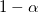
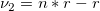
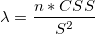
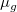
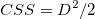

/math-451e329fef8e80a248804d0bc3a67d27.png "Power=Prob(F> F_0,\nu _{1,}\nu _2,\lambda )\,\!")
Im Allgemeinen wollen wir, wenn ein ANOVA-Test durchgeführt wird, die Trennschärfe des Tests mit festgelegten Stichprobenumfängen oder die Stichprobenumfänge mit festgelegten Trennschärfestufen wissen. Die X-Funktion PSS ANOVA1 kann verwendet werden, um die Trennschärfe sowie den Stichprobenumfang zu berechnen.
Der Algorithmus für die Berechnung der Trennschärfe
Wir nehmen an, dass jede Gruppe den gleichen Umfang hat. Die Formel der Trennschärfenberechnung ist gegeben durch
wobei /math-7617376c4ee07c377351181ae25399e6.png "F\,\!") als nichtzentrale
als nichtzentrale /math-ffc3aa8bbfb9461225eb31eb2b117d9d.png "F(\lambda ,\nu _{1,}\nu _2) \,\!") verteilt ist,
verteilt ist,
/math-b5125928794db12addea5ab0c4bfc6aa.png "F_0=F_{(1-\alpha ,\nu _{1,}\nu _2)}") , das
, das

Quartil der F-Verteilung mit/math-ae5787f61ff2a77a8838833e09777396.png "\nu _1 \,\!") und
und /math-d098596001dd1926cb1e564b8bdb9507.png "\nu _2 \,\!") Freiheitsgraden ist,
Freiheitsgraden ist,
/math-6018d1bd33adfeb87c574f013fe2c86d.png "\nu _1=r-1 \,\!") die Freiheitsgrade des Zählers sind,
die Freiheitsgrade des Zählers sind,

die Freiheitsgrade des Nenners sind,/math-58b7fc3474b021ff11c1a0df58a54060.png "n \,\!") die Anzahl pro Gruppe i ist,
die Anzahl pro Gruppe i ist,
/math-a01b83d7a33164700942b4b74732fd96.png "r \,\!") die Anzahl der Gruppen ist,
die Anzahl der Gruppen ist,

der Nichtzentralitätsparameter ist,/math-d8985e55d847e8dbff8396250377df96.png "CSS=\sum _{g=1}^r(\mu _g-\mu )^2")

der Mittelwert der iten Gruppe ist,/math-74b8eddf4b37de80c7c8eed1b64e46fc.png "\mu \,\!") der Gesamtmittelwert ist,
der Gesamtmittelwert ist,/math-5c9f6395bcfef917a121d7b046c62780.png "S^2 \,\!") mit dem Mittelwert des quadratischen Fehler geschätzt wird.
mit dem Mittelwert des quadratischen Fehler geschätzt wird.
/math-2de7e7ed883eec9db2977e38f178c2d3.png "D=\mu_{max}-\mu_{min}") die Differenz zwischen dem kleinsten Gruppenmittelwert und dem größten Gruppenmittelwert ist.
die Differenz zwischen dem kleinsten Gruppenmittelwert und dem größten Gruppenmittelwert ist./math-4c9c3f994a0aa21f5d3ea869c7e219ff.png "\mu_{min}") der kleinste Gruppenmittelwert ist.
der kleinste Gruppenmittelwert ist.